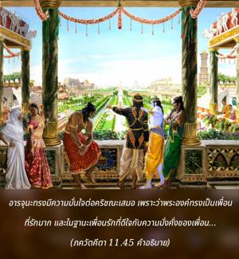

หลังจากได้เห็นรูปลักษณ์จักรวาลที่ไม่เคยเห็นมาก่อนนี้ ข้าพเจ้ารู้สึกดีใจ แต่ในขณะเดียวกันจิตใจของข้าสับสนด้วยความกลัว ฉะนั้น ได้โปรดกรุณาเปิดเผยรูปลักษณ์องค์ภควานฺอีกครั้ง โอ้ พระเจ้าของปวงเทวดา โอ้ ที่พักพิงแห่งจักรวาล

อรฺชุน ทรงมีความมั่นใจต่อองค์กฺฤษฺณเสมอเพราะว่าพระองค์ทรงเป็นเพื่อนที่รักมาก และในฐานะเพื่อนรักที่ดีใจกับความมั่งคั่งของเพื่อน อรฺชุน ทรงมีความยินดีมากที่เห็นว่าสหายกฺฤษฺณ ทรงเป็นบุคลิกภาพสูงสุดแห่งพระเจ้า และทรงสามารถแสดงรูปลักษณ์จักรวาลอันน่าอัศจรรย์เช่นนี้ แต่ในขณะเดียวกันหลังจากที่ได้เห็นรูปลักษณ์จักรวาลแล้วมีความรู้สึกกลัวว่าตนเองได้กระทำผิดมากมายต่อองค์กฺฤษฺณเนื่องจากความสัมพันธ์ฉันเพื่อนสนิท ดังนั้นจิตใจของ อรฺชุน สับสนเนื่องจากความกลัวถึงแม้ว่าจะไม่มีเหตุผลที่จะต้องกลัว ฉะนั้น อรฺชุน ทรงขอร้องให้องค์กฺฤษฺณแสดงรูปลักษณ์พระนารายณ์ เนื่องจากองค์กฺฤษฺณทรงสามารถแสดงรูปลักษณ์ใดก็ได้ รูปลักษณ์จักรวาลนี้เป็นวัตถุและไม่ถาวรเช่นเดียวกับโลกวัตถุที่ไม่ถาวร แต่ที่ดาวเคราะห์ ไวกุณฺฐ พระองค์ทรงมีรูปลักษณ์ทิพย์ พระนารายณ์สี่กร มีดาวเคราะห์จำนวนนับไม่ถ้วนในท้องฟ้าทิพย์ แต่ละดวงองค์กฺฤษฺณทรงปรากฏด้วยภาคแบ่งแยกที่สมบูรณ์ของพระองค์ในพระนามต่างๆ ดังนั้น อรฺชุน ปรารถนาจะเห็นหนึ่งในรูปลักษณ์ที่ปรากฏอยู่ในดาวเคราะห์ ไวกุณฺฐ แน่นอนว่าในแต่ละดาวเคราะห์ ไวกุณฺฐ พระนารายณ์ทรงมีสี่กร แต่ละองค์ทรงหอยสังข์ คทา ดอกบัว และกงจักรในตำแหน่งที่ไม่เหมือนกัน เนื่องจากสี่สิ่งนี้อยู่ที่พระกรต่างกันพระนารายณ์จึงทรงมีพระนามที่ไม่เหมือนกัน รูปลักษณ์ทั้งหมดเหล่านี้เป็นหนึ่งเดียวกับองค์กฺฤษฺณ ดังนั้น อรฺชุน จึงทรงขอดูรูปลักษณ์สี่กรของพระองค์